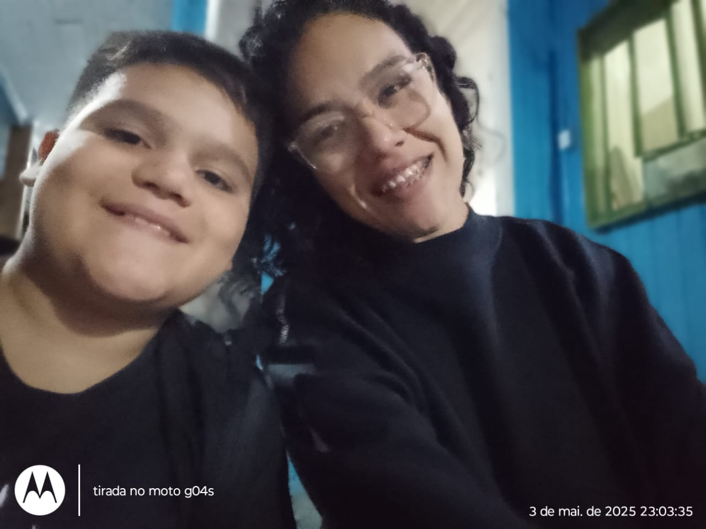

😊😘🩷🌷🥰💖💝💝
Parabens pelo seu dia!!!
Mãe eu fico grato por tudo que você ja fez por mim, eu te amo mais que tudo na minha vida, fico infinitamente grato também por você ter me colocado nesse mundo e também por você ser minha mãe eu te AMOO.

Com muito amor,
Victor Benites Rodrigues Momberger Silveira